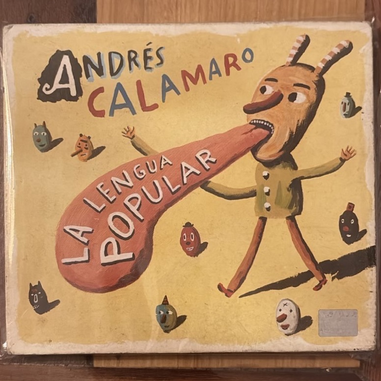

La Lengua Popular

Artista: Andrés Calamaro
Año de edición: 2007
Descripción: Un álbum fundamental del rock argentino producido por Cachorro López. Cuenta con una reconocida portada ilustrada por el artista Liniers y canciones populares como "Los Chicos".
Volver a la página principal